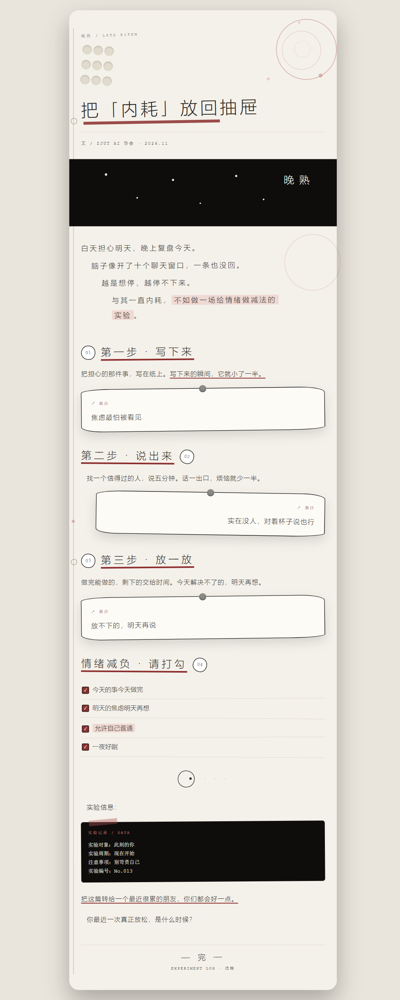
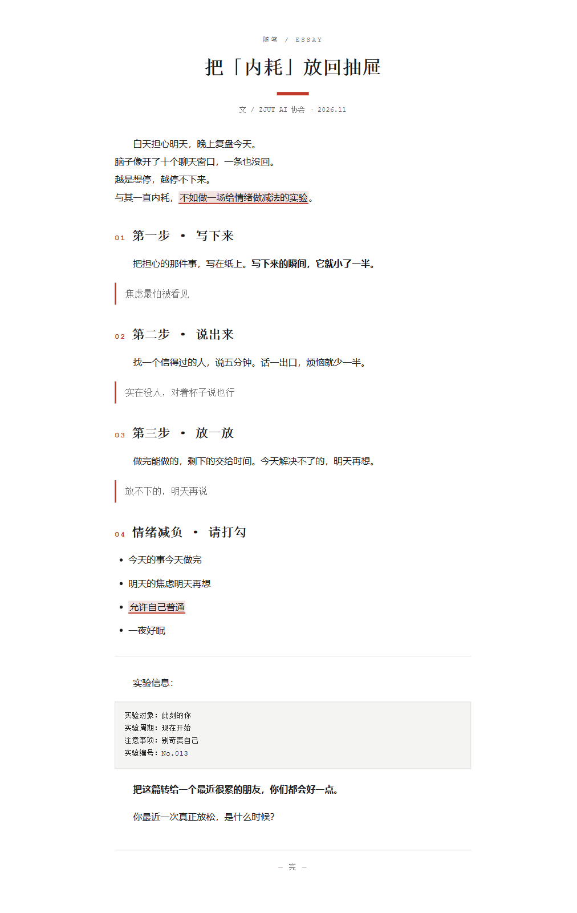
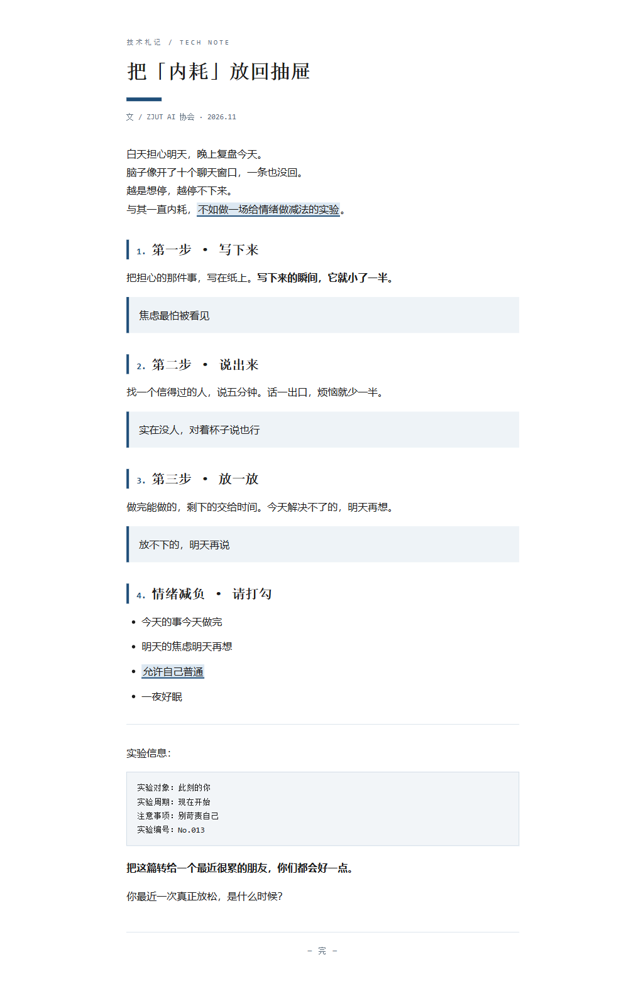

| 项目标识 | wechat-article-typesetter |
| 参赛赛道 | 开源基础软件与解决方案 |
| 技术方向 | AI 开发工具链与智能体框架（Agent Skill） |
| 文档版本 | 2026-10-23 |
| 开源许可证 | MIT License |
公众号文字稿一键排版助手
这是一个面向微信公众号小编、学生社团运营者和自媒体新手的排版工具。用户把已经写好的文字稿（.txt / .md）交给它，它自动识别标题、小节、引用、列表和重点句，套用内置风格模板，生成一个可以直接粘贴进微信公众号编辑器的单文件 HTML，并在生成后自动检查排版质量。
项目以 Agent Skill 的形式交付：SKILL.md 告诉 AI 什么时候该用、按什么步骤用；核心功能由可独立运行的 Python 脚本完成，不依赖任何第三方库，也不需要 API Key。
style，不依赖 class、外部 CSS 和脚本。项目作者是一名化工专业学生，日常需要为学生组织和公众号撰写推文。真实的工作流程是：
把“排版”从一件需要审美和经验的手工活，变成一条输入文字稿、输出可粘贴成品的确定性流程，并且用自动检查守住基本的可读性底线。
| 层次 | 技术 | 作用 |
|---|---|---|
| Skill 层 | Agent Skills（SKILL.md） | 描述触发条件、输入格式、执行步骤和限制 |
| 解析层 | Python 标准库（re、html） | 把文字稿解析成标题 + 结构化块 |
| 风格层 | JSON 配置（styles/*.json） | 保存四套风格的色板、字体、字号、间距 |
| 渲染层 | Python 字符串模板 | 生成全部内联样式的单文件 HTML |
| 校验层 | html.parser + WCAG 对比度算法 | 7 项排版质量检查 |
| 测试层 | unittest | 17 个自动化测试，覆盖生成、校验和命令行 |
| 演示层 | Playwright（仅截图验证用） | 浏览器实际渲染截图，确认视觉效果 |
Skill 不负责“画页面”，它负责三件事：
真正的排版计算全部由脚本完成，避免 AI 每次自由发挥。
用户文字稿 (.md / .txt)
│
▼
parse_article() ── 解析标题、小节、引用、列表、代码块、重点句
│
▼
render_html() ── 读取 styles/*.json，生成全部内联样式的 HTML
│
▼
validate.py ── 7 项自动检查
│ ├─ 禁用标签（script/style/link/iframe）
│ ├─ 容器宽度 677px
│ ├─ h1 数量
│ ├─ 外链资源
│ ├─ 内联样式覆盖
│ ├─ 文字对比度（WCAG AA）
│ └─ 正文字号 14–20px、行高 ≥1.6
▼
浏览器预览 → 全选复制 → 粘贴进公众号编辑器
| 文件 | 职责 |
|---|---|
skill/wechat-article-typesetter/SKILL.md | Skill 说明书：触发词、输入格式、执行步骤、异常处理 |
scripts/typeset.py | 解析文字稿、加载风格、渲染 HTML、命令行入口 |
scripts/validate.py | HTML 结构解析、对比度计算、7 项检查、JSON 报告 |
styles/datawhale.json | 科技蓝分享会风 |
styles/heytea.json | 杨梅晚熟风 |
styles/minimal.json | 极简书卷风 |
styles/academic.json | 学术理工风 |
tests/test_typesetter.py | 17 个自动化测试 |
examples/sample-article.md | 演示用文字稿 |
examples/output/*.html | 四套风格的实际生成结果 |
| 项目 | 内容 |
|---|---|
| 输入 | UTF-8 编码的 .txt / .md 文字稿；可选标题、作者、日期、点缀色、风格 |
| 输出 | 单文件 HTML（内联样式、无 JS、无外链、无外部字体） |
| 输出尺寸 | 容器 max-width: 677px，正文 16px |
| 使用方式 | 浏览器打开 → 全选复制 → 粘贴进公众号编辑器 |
支持标题、小节、次级标题、引用、无序列表、有序列表、代码块、分隔线、加粗、关键词高亮、行内代码。单换行保留为段内换行，空行分段。
| 风格 | 视觉特征 | 适合内容 |
|---|---|---|
| 科技蓝分享会风 | 手机卡片外框、浅灰白底、蓝色英文小标签、黑色大字块导语、空心数字编号、粗黑描边卡片、黄色虚线分隔 | 活动宣传、分享会、招募 |
| 杨梅晚熟风 | 手机卡片式外框、米白纸底、细黑体大字距标题、杨梅红点缀、水彩圆环与圆坑材质图案层、手画圆圈编号、手撕便签引用卡、装订竖线与打孔圆 | 生活、品牌、活动、系列内容 |
| 极简书卷风 | 宋体标题、首行缩进、朱红细线、少装饰 | 散文、随笔、观点、书评 |
| 学术理工风 | 宋体标题、深蓝点缀、左侧竖线、浅蓝引用框 | 理工科、技术分享、实验记录、教程 |
喜茶风的视觉规则整理自 24 篇喜茶官方公众号推文（2021–2026）的排版分析，只借鉴版式规则，不使用任何官方图片或素材。
通过 --accent "#RRGGBB" 替换整套风格的点缀色，适配不同主题。
validate.py 输出 7 项检查结果，命令行返回非零退出码，便于接入自动化流程。
python skill/wechat-article-typesetter/scripts/typeset.py examples/sample-article.md \ --style heytea --author "化工小张" \ --output examples/output/sample-heytea.html --validate
把 skill/wechat-article-typesetter/ 放入支持 Agent Skills 的目录后，AI 在用户提到“公众号排版”“推文排版”等场景时自动加载 SKILL.md，并按其中步骤调用脚本。
把排版时间从“一两个小时”压缩到“一条命令 + 一次复制粘贴”，同时用自动检查避免颜色太浅、字号太小、行高太挤等可读性问题。
<style>、class、外部字体和 JS，全部内联样式。执行命令：
python -m unittest discover -s tests -v
实际结果（2026-10-23）：
Ran 17 tests in 0.172s OK
测试覆盖：四套风格生成与 7 项检查、空输入报错、标题回退、HTML 注入转义、自定义点缀色、非法参数报错、Markdown 结构渲染、外链检出、低对比度检出、缺失内联样式检出、对比度算法已知值、命令行端到端运行、校验器 JSON 输出。
已生成：examples\output\sample-heytea.html 排版校验：通过（7 项检查） 已生成：examples\output\sample-minimal.html 排版校验：通过（7 项检查） 已生成：examples\output\sample-academic.html 排版校验：通过（7 项检查）



已验证：四套风格的实际浏览器渲染；命令行生成、校验、错误处理；17 个自动化测试；生成 HTML 无 script、style、link、外链资源。
未验证（如实说明）：真实公众号后台的最终粘贴效果需要登录账号，本次开发环境无法完成；本项目通过“全内联样式 + 禁用标签检查”提高兼容性，但公众号编辑器仍可能对个别 CSS 做二次处理。不同手机、不同字体环境下的最终显示可能有差异。
MIT License。
python -m unittest discover -s tests -v，确认 17 个测试通过；项目不使用第三方依赖，不需要网络、API Key 或数据库。
wechat-article-typesetter/
├── README.md
├── LICENSE
├── requirements.txt
├── .gitignore
├── skill/
│ └── wechat-article-typesetter/
│ ├── SKILL.md
│ ├── scripts/
│ │ ├── typeset.py
│ │ └── validate.py
│ └── styles/
│ ├── heytea.json
│ ├── minimal.json
│ └── academic.json
├── examples/
│ ├── sample-article.md
│ └── output/
├── tests/
│ └── test_typesetter.py
└── docs/
├── project-introduction.md
├── project-introduction.html
├── project-introduction.pdf
├── demo-video-script.md
└── screenshots/